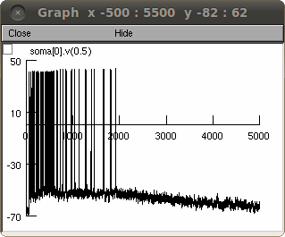

This is the readme for the model associated with the paper: Sidiropoulou K, Poirazi P (2012) Predictive Features of Persistent Activity Emergence in Regular Spiking and Intrinsic Bursting Model Neurons. Plos Computational Biology 8(4):e1002489 These NEURON model files were contributed by the paper authors. NEURON is freely available from http://www.neuron.yale.edu To run: either auto-launch from ModelDB or download and expand the archive, compile the mod files (with mknrndll (mac or mswin) or nrnivmodl (unix/linux)). Start by double clicking the mosinit.hoc (mswin), drag and dropping the mosinit.hoc on the nrngui icon (mac) or by typing "nrngui mosinit.hoc" in the expanded archive (unix/linux). Once the simulation has started press the "run simulation" button. After a short time you should see a graph similar to fig 4B1 from the paper:  20140310 An ar2 argument was added to a rate call in naf.mod so that the model would work with a new version (1024) of NEURON whose C compiler checks that the number of arguments in function calls matches the number in the definition. The results of the simulation was uneffected.